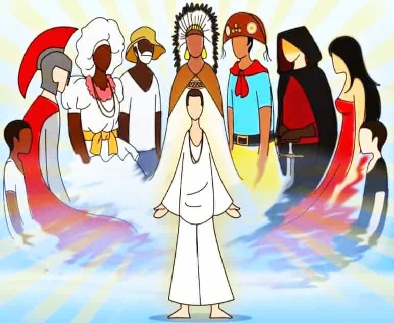

Guias na Umbanda

Na Umbanda, os guias espirituais são entidades que trabalham em conjunto com os médiuns durante os rituais e trabalhos espirituais. Eles são responsáveis por trazer orientação, cura e auxílio espiritual aos praticantes e frequentadores dos centros umbandistas.
Tipos de Guias
Existem diferentes tipos de guias na Umbanda, sendo os mais comuns:
- Marinheiro: Os marinheiros são entidades espirituais que têm uma forte ligação com o elemento água e o universo marítimo. Eles são representados por espíritos de marinheiros, pescadores e navegantes. Os marinheiros trazem conselhos, proteção e auxílio em questões emocionais, espirituais e também podem ajudar nas situações que envolvem a superação de desafios.
- Baiano: Os baianos são entidades espirituais que têm origem na cultura e tradição da Bahia, no Brasil. Eles são representados por espíritos de pessoas que viveram na região da Bahia ou que possuem uma forte conexão com a cultura baiana. Os baianos são conhecidos por sua alegria, descontração, sabedoria popular e habilidade em lidar com questões relacionadas à prosperidade, trabalho, abundância e alegria de viver.
- Criança: As crianças são entidades espirituais que representam a pureza, a inocência e a alegria. Elas são consideradas "crianças no astral" e atuam como guias espirituais trazendo uma energia leve e amorosa. As crianças auxiliam em questões relacionadas à cura emocional, à resgate da alegria de viver e à proteção dos mais jovens.
- Caboclo: Os caboclos são entidades espirituais que têm uma forte ligação com a cultura indígena e a sabedoria ancestral. Eles são representados por espíritos de indígenas e podem trazer conselhos, cura, proteção, força e orientação espiritual. Os caboclos são conhecidos por trabalharem com ervas, elementos naturais e por sua conexão com a natureza.
- Preto Velho: Os pretos velhos são entidades espirituais representadas por espíritos de pessoas idosas, muitas vezes associados aos ancestrais e à sabedoria. Eles têm um papel de orientação, aconselhamento, cura e trazem uma energia de tranquilidade, paciência e amor incondicional. Os pretos velhos são conhecidos por sua sabedoria e pela capacidade de auxiliar nas questões emocionais e espirituais.
- Boiadeiros: Os boiadeiros são entidades espirituais que têm uma ligação com o universo rural, os trabalhadores do campo e o universo pecuário. Eles são representados por espíritos de vaqueiros, boiadeiros e trabalhadores rurais. Os boiadeiros trazem uma energia de proteção, força, coragem e auxiliam em questões relacionadas à superação de desafios, trabalho e proteção.
- Cigano: Os ciganos são entidades espirituais representadas por espíritos de pessoas de origem cigana. Eles trazem conselhos, orientações, proteção e têm uma conexão com a espiritualidade cigana e seus conhecimentos ancestrais. Os ciganos são conhecidos por sua habilidade em lidar com questões relacionadas ao amor, relacionamentos, prosperidade, sorte e espiritualidade.
- Malandro: Os malandros são entidades espirituais que têm uma forte ligação com o universo urbano, especialmente com o submundo e a malandragem. Eles são representados por espíritos de pessoas que viveram uma vida boêmia, ligada à malandragem e à cultura popular. Os malandros trazem uma energia de astúcia, proteção e habilidade em lidar com questões cotidianas, superação de desafios e proteção espiritual.
- Exu: Os exus são entidades espirituais que têm uma energia vibrante, dinâmica e protetora. Eles são considerados guardiões dos terreiros e trabalham como intermediários entre o mundo espiritual e o mundo material. Os exus são conhecidos por sua habilidade em abrir caminhos, lidar com questões de justiça, proteção e são responsáveis pela comunicação entre as esferas espirituais.
- Pombagira: As pombagiras são entidades espirituais femininas que trabalham em conjunto com os exus. Elas trazem a energia da sedução, do amor, da sensualidade e do equilíbrio emocional. As pombagiras atuam em questões relacionadas ao amor, relacionamentos, sexualidade e proteção das mulheres.
- Exumirim: O Exumirim é uma entidade espiritual da Umbanda que representa a energia da criança que partiu prematuramente, trazendo alegria, pureza e sensibilidade. Ele atua na proteção das crianças, auxilia na cura emocional e pode trazer mensagens de paz e conforto.
Trabalhos dos Guias
Os guias espirituais realizam diversos trabalhos durante os rituais e sessões de Umbanda. Alguns exemplos incluem:
- Atendimento individual: os guias espirituais orientam e oferecem ajuda individualmente aos praticantes que buscam orientação e cura;
- Giras de incorporação: durante as giras, os guias espirituais incorporam nos médiuns para transmitir mensagens, orientações e realizar trabalhos de cura;
- Desobsessão: os guias auxiliam na libertação e cura de obsessões espirituais, ajudando a afastar energias negativas e promovendo a harmonização espiritual;
- Trabalhos de limpeza espiritual: os guias realizam trabalhos energéticos para limpar e purificar os ambientes e as pessoas, removendo energias negativas;
- Conselhos e orientações: os guias oferecem conselhos espirituais e orientações para a vida cotidiana, auxiliando na evolução pessoal e no crescimento espiritual.